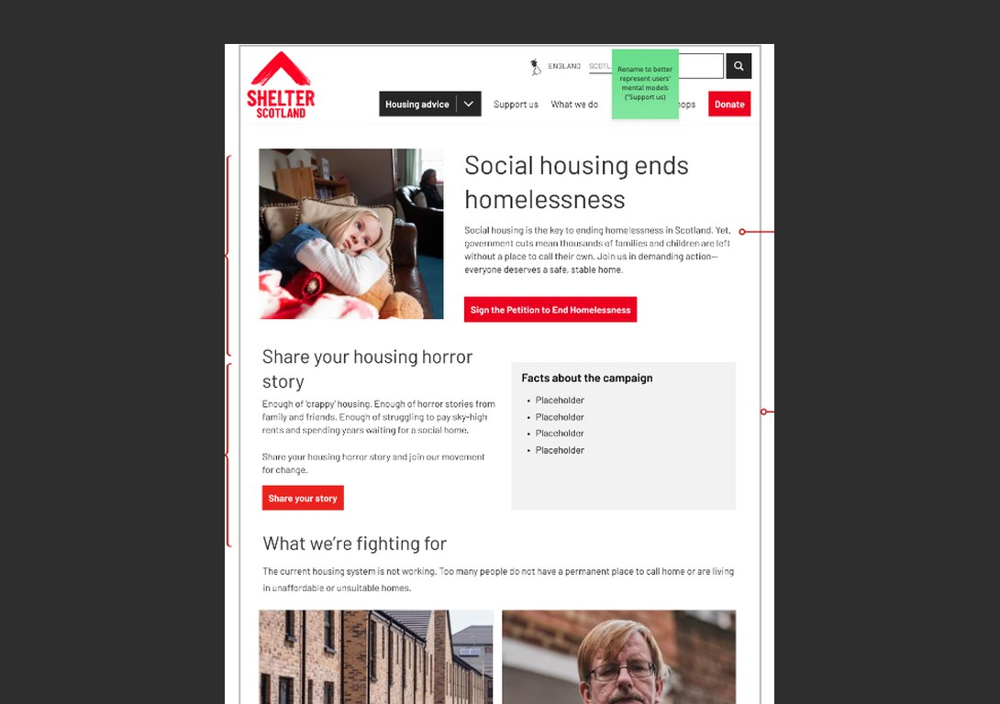

Accessibility improvements for the stepper tool
Overview
The stepper tool helps users navigate complex housing advice by asking a series of questions and using their answers to provide relevant advice. It is particularly useful when the advice depends on several circumstances, such as tenancy type.
Accessibility and usability testing with disabled users, conducted by AbilityNet, identified issues with the existing interaction. In particular, one participant did not notice that a new question had appeared after answering the first, while another found the number of options difficult to manage.
I reviewed the findings alongside the existing stepper pattern, accessibility requirements and established design patterns, then developed and tested a proposed iteration of the component.
The problem
The existing stepper breaks complex advice into a series of questions. Users answer each question and the next relevant question is revealed on the same page.
This approach reduces the amount of irrelevant information users need to read, but the existing pattern has some limitations:
- New questions can appear further down the page, meaning users may not realise that the content has changed.
- Longer steppers can become difficult to navigate, particularly when users need to go back and change an earlier answer.
- Results can contain a large amount of text and links, which may be overwhelming for some users.
- Dynamically revealing questions creates accessibility challenges because changes to the page are not reliably communicated to assistive technologies.
- When several navigation elements are present on the same page, users may need to distinguish between the stepper and other page navigation.
These issues became particularly relevant when the tenancy checker was included in accessibility and usability testing with disabled users.
What we observed
Two participants experienced difficulties with the stepper:
- P01 was confused by the radio-button options and attempted to select multiple answers.
- P02, who had cognitive access needs, found the number of options difficult to manage and did not notice that the next question had appeared below the first until prompted. They also felt the two question boxes were too close together.
Exploring the solution
We reviewed the accessibility issues alongside established patterns and guidance, including the GOV.UK form and decision-making patterns and WCAG 2.2 requirements.
The main direction was to move from revealing multiple questions on the same page to a one-question-at-a-time pattern. We proposed:
- Showing one question at a time, with a Next button to progress.
- Automatically scrolling to the relevant point after progressing.
- Showing previous questions and answers so users can review their journey.
- Providing an error message when users try to continue without answering.
- Allowing the stepper to use either an H2 or H3 heading, depending on its context.
- Improving the presentation of results, including exploring accordions to reduce the amount of information displayed at once.
The one-question-at-a-time approach was particularly important for accessibility. Rather than relying on users to notice that new content had appeared further down the page, the user actively triggers the next step. This makes the progression more predictable and reduces reliance on dynamically revealed content.
Displaying previous answers also supports users who need to review their choices and aligns with the GOV.UK pattern for avoiding unnecessary re-entry of information, supporting WCAG 2.2's Redundant Entry criterion.
From recommendations to prototype
Based on the review, I developed a prototype of the proposed pattern. We took the prototype through two rounds of design critique, iterating on the interaction, content and component behaviour.
Some of the changes included:
- Renaming “Selected options” to “Your answers”.
- Providing a flexible heading level for different contexts.
- Refining the error message to “Please select an option.”
- Adding Start again and Edit your answer actions.
- Refining the positioning and styling of these actions to avoid competing with the primary Next action.
- Improving the auto-scroll behaviour when users reach results or choose to start again.
- Exploring clearer separation between questions so that newly revealed content is easier to notice.
The final design remained an iteration of the existing stepper rather than introducing a completely new component. The Scotland team already uses the stepper across advice content and considers it easier to embed and maintain in Contentful than the existing decision-tree pattern.
Testing
We then compared the existing and updated versions of the stepper through A/B testing. We tested:
- Desktop: existing version vs proposed version
- Mobile: existing version vs proposed version
The task asked participants to use a tenancy checker to determine their tenancy type and whether their landlord had followed the correct process. We looked at:
- Initial errors
- Error recovery
- Task completion time
- Perceived usability
- How logical the question order felt
- Whether users knew what information was expected of them
- Overall satisfaction
What we found
Overall, all four versions performed well. Participants made few errors and most understood how the tenancy checker worked after reading the scenario.
Importantly, the proposed accessibility changes did not introduce a negative impact for users without identified accessibility requirements.
There were some differences between versions:
- One participant using the existing desktop version took some time to realise they needed to scroll after answering the first question.
- Two participants using the existing mobile version said it was not immediately obvious that there was another step after answering the first question.
- The updated versions performed marginally better overall, particularly on mobile.
- The updated mobile version received higher ratings for aspects related to input and speed.
- The existing desktop version scored slightly higher in some survey questions, although observed behaviour was very similar between the two versions.
There was also a separate content issue: two participants struggled to identify the option for renting from a letting agent because it was combined with renting from a private landlord. We recommended separating these options even though they currently lead to the same advice.
Iterations and next steps
Testing and stakeholder feedback led to several further refinements, including improvements to:
- Auto-scroll behaviour when reaching the results.
- Auto-scroll when selecting Start again.
- The positioning and styling of Start again and Edit your answer.
- The heading hierarchy.
- The presentation of the answer history.
The auto-scroll issues on the results and Start again states were subsequently resolved.
The proposed stepper pattern is currently under review by Shelter England before wider implementation in the design system.
Other projects
Campaigns page research & redesign | Shelter Scotland
Usability testing and card sorting that reshaped how the campaigns page balances information and action.
Read case study